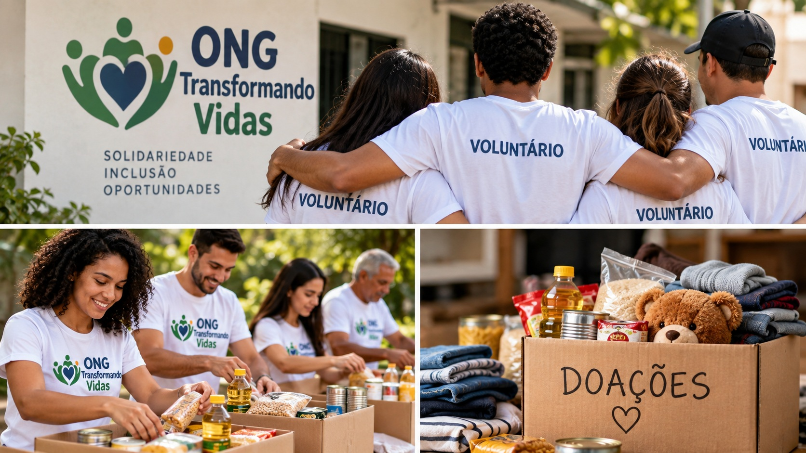

Conheça nossos projetos
A ONG Transformando Vidas desenvolve projetos sociais com o objetivo de ajudar a comunidade e incentivar a participação de voluntários.
Voluntariado
Existem diferentes maneiras de participar das nossas ações como voluntário.
- Participação em campanhas solidárias
- Apoio em eventos comunitários
- Arrecadação e distribuição de alimentos

Campanhas de Doação
As doações ajudam a manter nossos projetos e permitem atender um número maior de pessoas.
- Doação de alimentos
- Doação de roupas
- Contribuições financeiras

Participe
Quer contribuir com nossos projetos? Faça seu cadastro e participe das nossas ações.
Quero participar